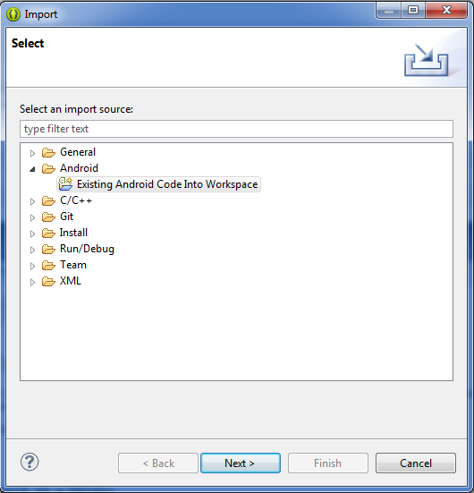
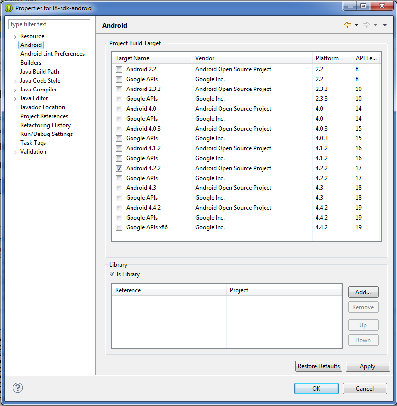
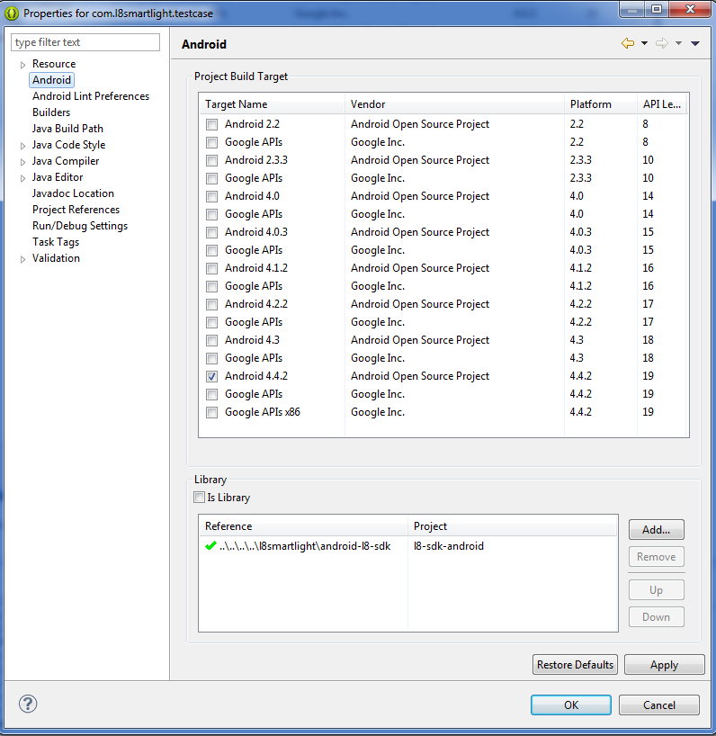

L8 SDK for Android platform V2.0
Thanks you for your interest about our L8 sdk for android platform. This documentation describes all functions and possibilities of this new SDK. We will improve and update it as soon as possible because we are in continuous evolution.
If you have done something with the previous version SDK V1.0, migrate your code to this new version is very easy to you.How to install
1.Import in eclipse.
2.Check as a library.
3.Create a new projet and select l8-sdk-android as a referenced library
Maybe is also a good idea to get into the classpath.
4.Change manifest
- Insert in AndroidManifest.xml the activity.
<activity
android:name="com.l8smartlight.sdk.android.bluetooth.DeviceListActivity"
android:label="@string/txt_select_device"
android:theme="@android:style/Theme.Dialog"
/>
and insert in strings.xml: string txt_select_device
<string name="txt_select_device">Select device</string>
Examples
In the github project page you have an example of use: https://github.com/l8smartlight/l8-sdk-android-V2.0There is a complete description of AndroidL8Manager and AndroidL8ManagerListener in this javadoc.